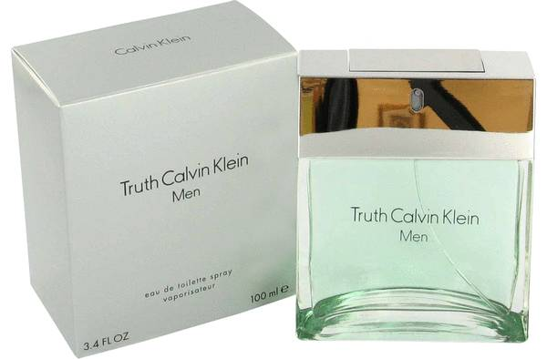

Мъжки парфюми
Mont Blanc Legend

Тоалетната вода Legend излиза на пазара през 2011 г., и въпреки че е все още сравнително млад , той има всички предпоставки да се превърне в истинска легенда . Парфюмът е вдъхновен от " легендарните " ценности , които правят един човек - честност, увереност , самодисциплина , смелост, страст и сексапил . Той е проектиран така, че тези ценности са подчертани и засилени . Той съчетава сила и нежност, традиция , но и модерен стил.
Hugo Boss Boss In Motion
Hugo Boss Boss In Motion е живо, модерно и динамично ухание, от което буквално струи адреналин. Ароматът е създаден за мъже, които вярват на инстинктите си и отговарят на предизвикателствата на живота. Сам по себе си парфюмът Boss In Motion говори за увереност, мистичност и динамичен начин на живот. Връхните нотки на този парфюм са бергамот, свеж босилек и теменужка. Подходящ за всеки повод.
Calvin Klein Truth for Men
Тоалетната вода Calvin Klein Truth for Men, изобилства от чувствени акорди, е петият поред мъжки аромат на Calvin Klein. Излиза на пазара през 2002г. заедно с Truth for Women. Замисълът на този аромат е да кореспондира с природата – такъв е и съставът му. Аромат, който подчертава силата и естествената чувствителност на мъжете. Truth for Men е специално създаден за мъжете, които биха искали да се насладят на дълготрайното усещане за свежест.
Azzaro Chrome
Свеж аромат за съвременния мъж. Той изразява търсенето на идентичност, емоция и радост. Умелото свързване на силни емоции с кристално чиста мъжественост. Azzaro Chrome веднага ще спечели Вашето внимание с луксозни акорди на лимон и бергамот. Уникалният състав на розмарин, нероли и сочен ананас е тясно обвързан с жасмин. Циклама и ароматен кориандър се преплитат с топли нотки на кардамон, кедър и сандалово дърво.